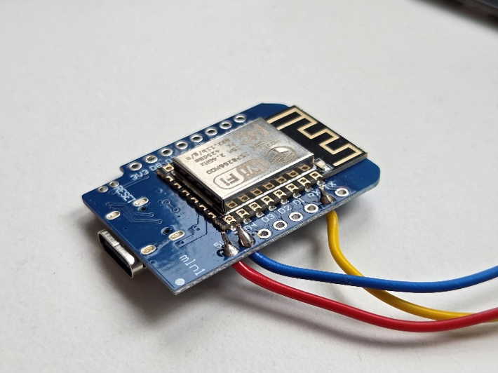
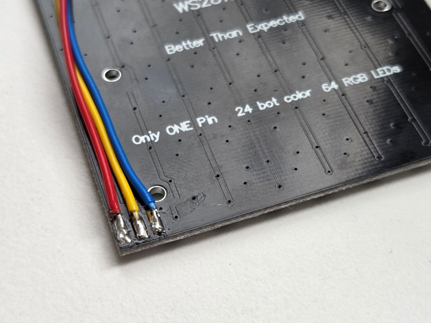
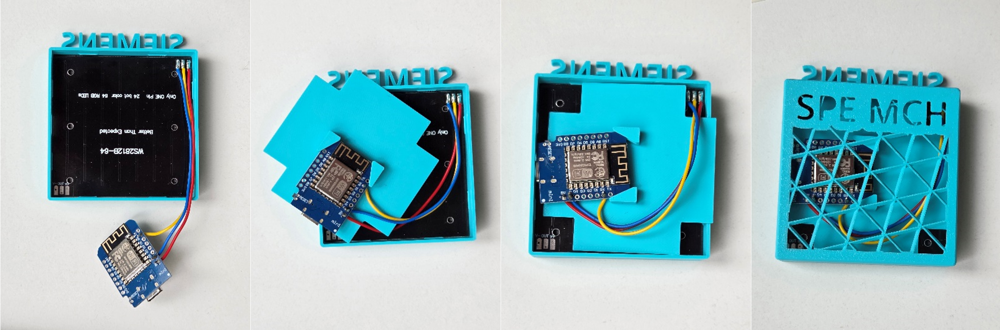

Aufbau
Insgesamt besteht das Gadget aus den folgenden Bauteilen:

- 1x Gehäuse
- 1x Montageplatte
- 1x Rückwand
- 3x Adern 10 cm 0.25 mm² (rot, blau, gelb)
- 1x RGB-Matrix 8x8
- 1x D1 Mini (USB-C)
- 1x USB-C Kabel
Gehäuse
Das 3D-Modell, welches als Grundlage dient, stammt von Sebastian Stf22 und wurde ursprünglich auf 3D-Gehäuse Vorlage. veröffentlicht. Das Modell wurde stark modifiziert und wird 3-Farbig ausgedruckt. Die 3D-Druck Dateien können hier
Programmierung
Für die Software nutzen wir eine tolle Open-Source-Firmware, die du ganz einfach herunterladen kannst! Der Code stammt von: Software. Diese Software ist unter der BSD-3-Lizenz lizenziert und darf frei verwendet werden. Das ist super praktisch, um damit zu experimentieren und vielleicht sogar eigene Ideen umzusetzen! Um die Firmware auf deinen ESP zu bekommen, kannst du beispielsweise das ESPWEBTOOL von Spacehuhn nutzen: ESPWEBTOOL. Basic_SIEMENS_Wortuhr8x8_ESP8266.bin aus dem Projektordner hochladen.
Aufbau
>Adern ca. 3 mm abisolieren. Abisolierte Stellen leicht verdrillen und vorverzinnen. Hierbei beachten, dass eine der Seiten so dünn vorverzinnt ist, dass die Ader durch die Löt- Augen des Controllers passen.
Adern durch die Löt-Augen des Controllers stecken und verlöten. Die Adern müssen, wie auf dem Bild zu sehen, von der Seite des USB-Ports durchgeführt werden.

Adern auf den Pads der RGB-Matrix festlöten. Hierzu die Löt-Pads der Matrix reichlich vorverzinnen.
Ausrichtung der Adern siehe Bild!

Montage
Matrix in den Uhrenkörper einsetzen. Die Anschlüsse müssen oben rechts sitzen. Sonst müsste in der Konfiguration die Orientierung der Matrix geändert werden. Den Controller auf die Montageplatte setzen und den USB-Port in die Öffnung stecken. Es ist darauf zu achten, dass die Adern oberhalb der Montageplatte verlaufen. Anschließend die Montageplatte fest eindrücken. Zuletzt die Rückwand aufsetzen.

Sollte die Uhr im zusammengebauten Zustand nochmal geflasht werden müssen, wird es durch unkontrolliertes Leuchten zu Überhitzung kommen.
Die Uhr wird so heiß, dass das Gehäuse weich wird! In einem solchen Fall muss die Uhr zerlegt werden. Die Adern können angelötet bleiben. Die Matrix hält die Wärme aus, allerdings muss man vorsichtig sein. Die Matrix kann sich bis zu ~70° C erhitzen!
W-Lan Zugang einrichten
Konfiguration
- Notiere die IP-Adresse beim Start der Wordclock. Diese läuft als Zahlen durch
- Rufe auf einem beliebigen Gerät im Browser die IP-Adresse auf
- Gerät und Wordclock müssen im selben Netzwerk sein
Troubleshooting
- Deine Uhr stellt die Farben falsch dar. Passe die Farbreihenfolge im Webserver unter „Einstellungen -> LED-Typ“ auf GRB an.
- Der Webserver reagiert nicht. Lade die Seite neu. Sollte das nicht helfen öffne einen neuen Tab oder starte die Wordclock neu (Unplug -> Plugin).
- Der Webserver ist nicht erreichbar. Checke deine WLAN-Konfig. im Netzwerk (z.B. Geräte untereinander kommunizieren lassen). Du kannst auch ein Hotspot mit dem Smartphone erstellen. Sobald die Wordclock die Zeit hat, kannst du den Hotspot wieder deaktivieren und die Uhr läuft weiter, solange sie eingeschalten bleibt.
- Auslesen per App „USBTerminal“. Verbinde die Uhr und stelle 115200 Baud ein.